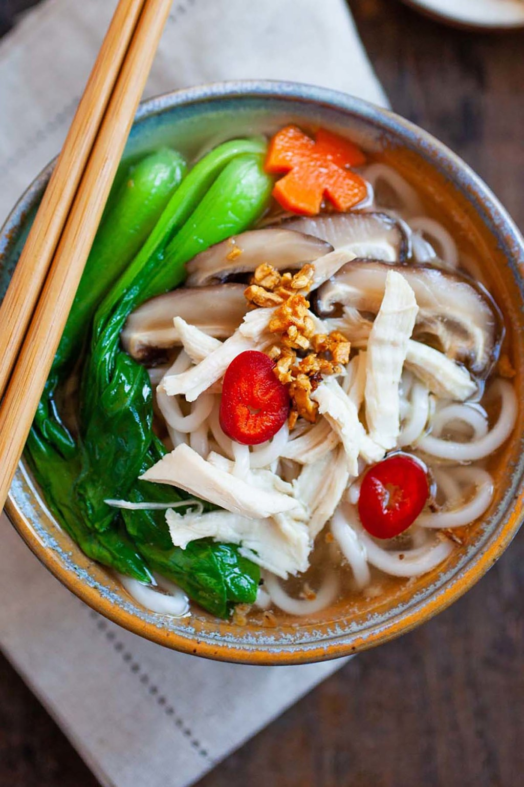

Chinese Chicken Noodle Soup

- Prep Time
- 10 mins
- Cook Time
- 10 mins
- Serves
- 2
Ingredients
- 226 g fresh noodles
- 2 cloves garlic, finely minced
- 1 tablespoon oil
- 1 1/2 cups store-bought or homemade chicken broth
- 1/2 cup water
- 4 fresh shiitake mushrooms, sliced
- 4 slices carrot
- 4 baby bok choy
- 1 dash white pepper
- salt to taste
- 115 g chicken, boiled, cooked, and hand-shredded into pieces
Instructions
-
Prepare your noodles first by boiling the noodles al dente. Rinse the
noodles with running water, drain and set aside.
-
Prepare the garlic oil by stir-frying the garlic in the oil until they
turn light to golden brown. Set aside.
-
Prepare the broth by bringing the chicken broth and water to boil. Add
the mushrooms, carrot, baby bok choy, white pepper, and salt to taste.
Once they are cooked, turn off the heat.
-
To serve, add the noodles in a bowl, and top with the shredded chicken
on top. Ladle the soup on top of the noodles and top with the garlic
oil. Serve immediately. If you like, you can serve it with cut red
chilies in soy sauce.
Back to main